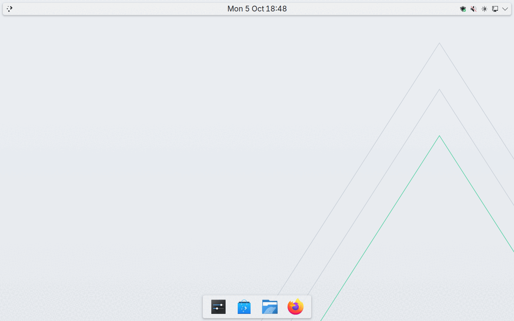
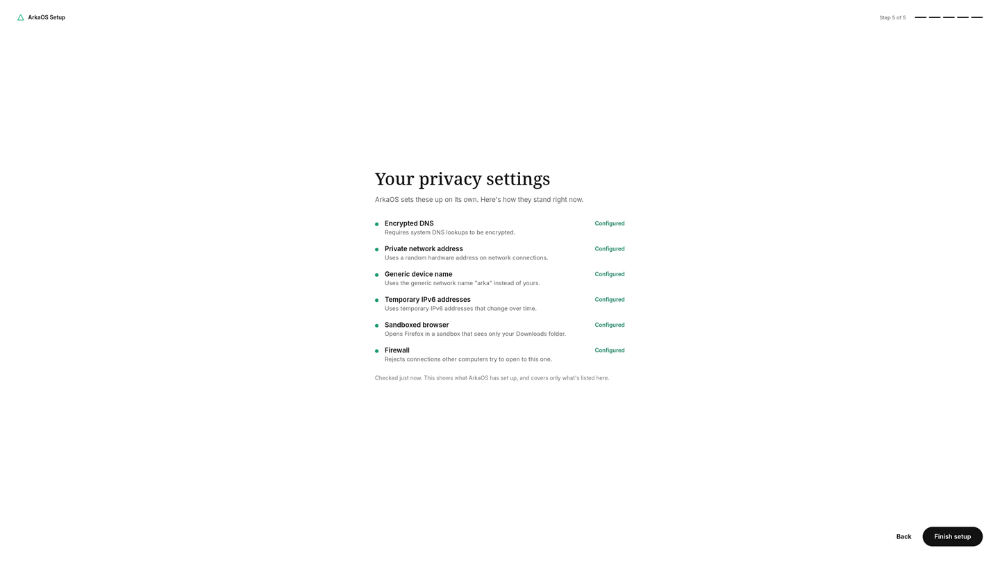
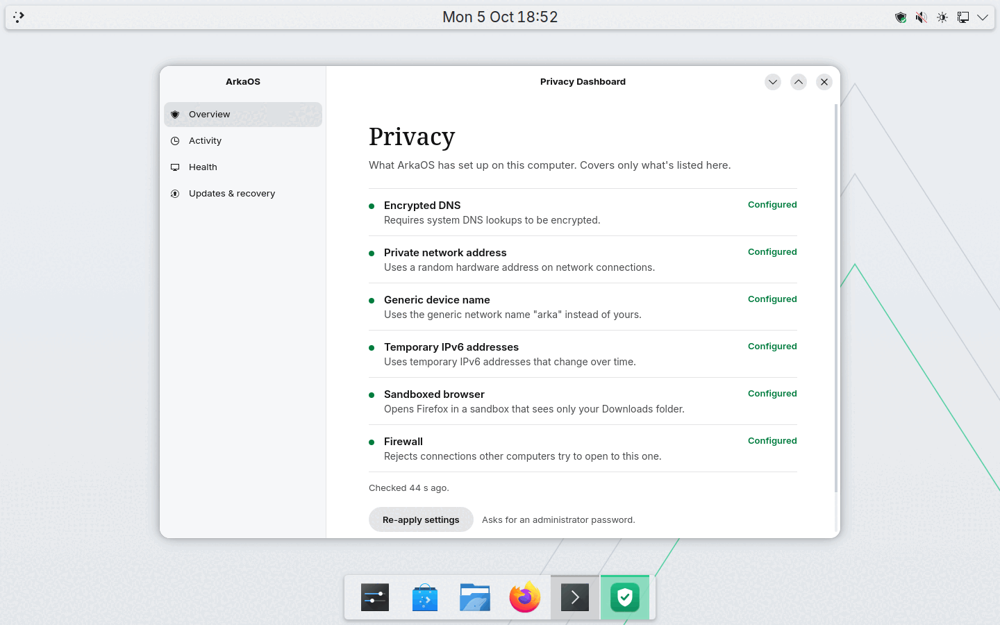

A Linux desktop that sets up your privacy, and shows you where it stands.
ArkaOS turns on common privacy settings for you, tells you plainly whether each one is in place, and keeps your previous system on disk when it updates. It's built on Fedora and KDE Plasma.

See it in a minute
From switching it on to the Privacy dashboard: setup, choosing light or dark, and your desktop. Recorded in a virtual machine; nothing is sped up except waiting.
What it is
Privacy settings, already on
Settings you'd normally look up and change by hand are set when the system starts, and checked again while it runs. If one stops being in place, ArkaOS says so.
Updates that wait for you
A new version is prepared next to the one you're using and takes over only when you restart. Updates never restart your computer on their own, and the previous version is kept on disk. If a new version fails its start-up checks, or doesn't start at all, ArkaOS tries it three times and then goes back to the previous version by itself.
Plain answers, no score
The Privacy dashboard lists each setting as Configured or Needs attention and when it was last checked. It never gives you a percentage or says you're "protected".
The privacy settings
What each one does, in plain words, and how far we've tested it.
"Configured" means a checked setting is in place. It doesn't mean you can't be tracked: websites, accounts and apps can still identify you.


What we can show, and what we can't
Every item sits in exactly one column. We move something left only after testing it.
Tested
- The privacy settings above marked "Tested in a VM"
- Setup with a light or dark look, then your desktop
- Read-only system files at runtime
- Going back to the previous version on its own after a broken update, keeping a good update, and going back by hand with one command (in a VM on 11 October 2026; the first two also on one real laptop on 12 October 2026)
- Booting from USB on one laptop (an earlier version)
Being tested
- Updates and going back on real laptops
- More real laptops
- arka-pulse, which watches system health locally. Its predictions are estimates and it takes no action on its own.
Not yet
- A downloadable installer. One with disk encryption on by default is built and works in a VM, but isn't published yet.
- Secure Boot with ArkaOS's own keys
- Support for a wide range of hardware
- Anonymity of any kind. ArkaOS doesn't hide who you are online.
Try it
There's no installer to download yet. A virtual machine is the safest way to look around.
From a USB stick
For testing only. It has run on one laptop so far; Wi-Fi, graphics or sleep may not work on yours.
USB notes →Build it yourself
The whole system is one container image.
podman build -t arkaos:dev .Build guide →